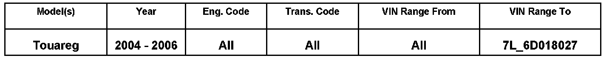
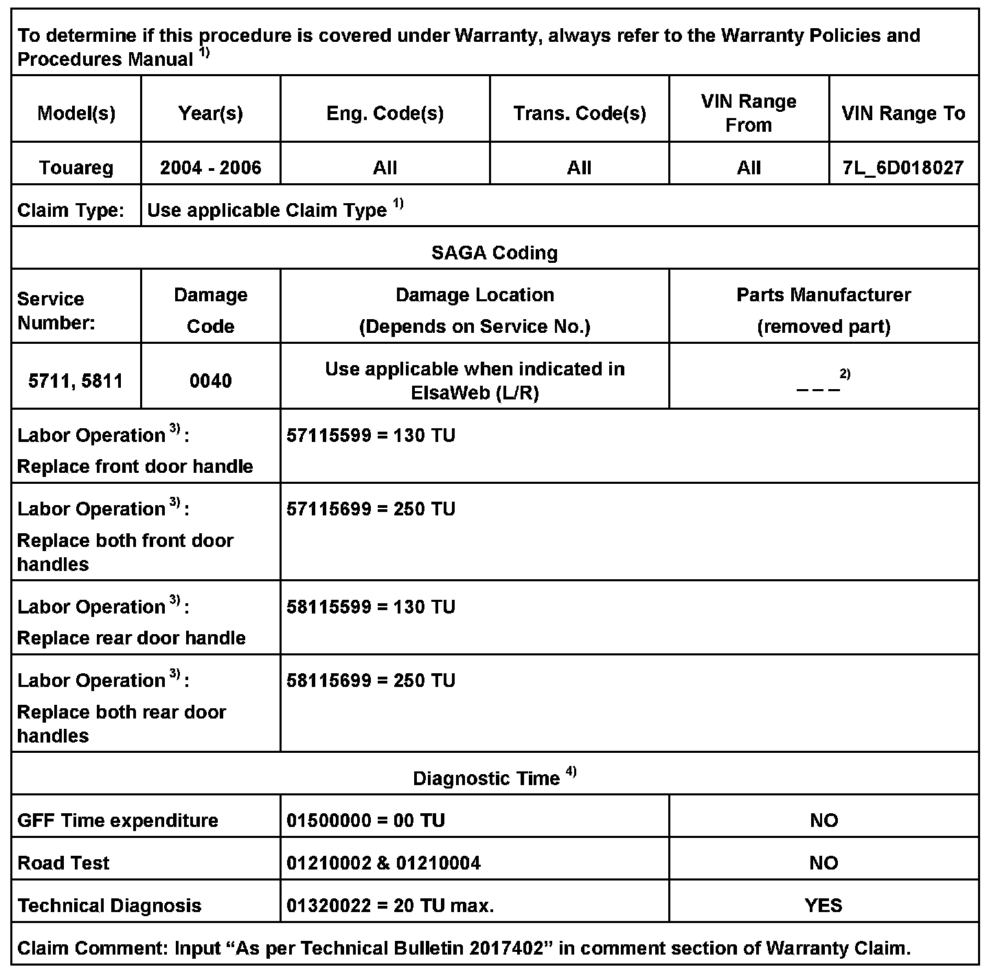
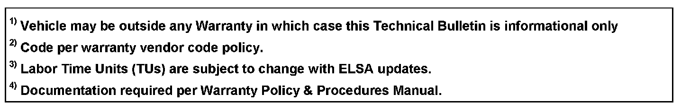
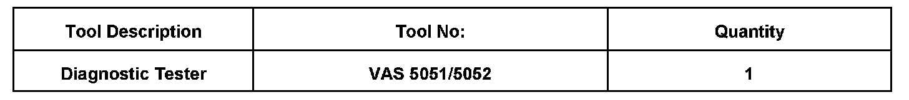

Body - Doors Can't Be Locked With Exterior Handle Button
57 08 07May 5, 2008
2017402, Supercedes T.B. Group 57 number 08-05 dated March 14, 2008 due to additional symptom.

Affected Vehicles
Condition
Door, Cannot be Locked with Exterior Door Handle Button; "Shift to Park" Displayed on Instrument Cluster
Operating exterior door handle button does not lock vehicle or "Shift to Park" displayed on the instrument cluster without activation of door handle button.
Technical Background
Corrosion of door handle electronics affects ability to lock doors at exterior door handle. "Shift to Park" may also be seen on instrument cluster without door handle button being activated.
Production Solution
Improved part as of VIN 7L_6D018028
Service
Check outside door handle central locking button status with VAS 5051/5052. Use guided functions to monitor the following Measured Value Blocks (MVB) under Central Control Module for Convenience System:
^ MVB 1_4 - Driver's Outside Door Handle Central Locking Button -E369-
^ MVB 7_4 - Passenger's Outside Door Handle Central Locking Button -E370-
^ MVB 8_4 - Left Rear Outside Door Handle Central Locking Button -E371-
^ MVB 9_4 - Right Rear Outside Door Handle Central Locking Button -E372-
Press outside door handle lock button. If status DOES NOT change from NOT OPERATED to OPERATED, replace door handle.


Warranty

Required Parts and Tools
No Special Parts required.
Additional Information
All part and service references provided in this Technical Bulletin are subject to change and/or removal. Always check with your Parts Dept. and Repair Manuals for the latest information.